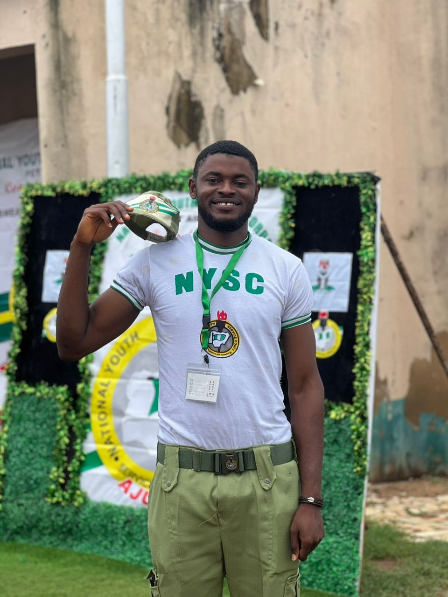
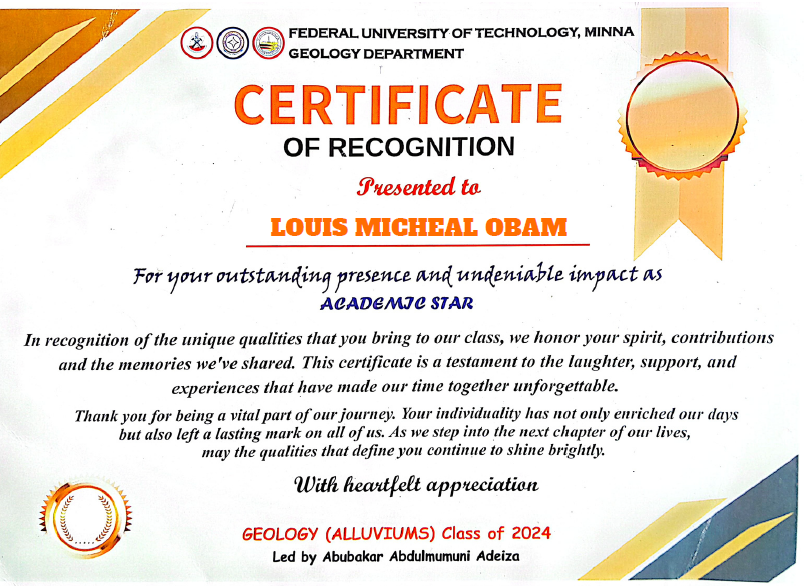
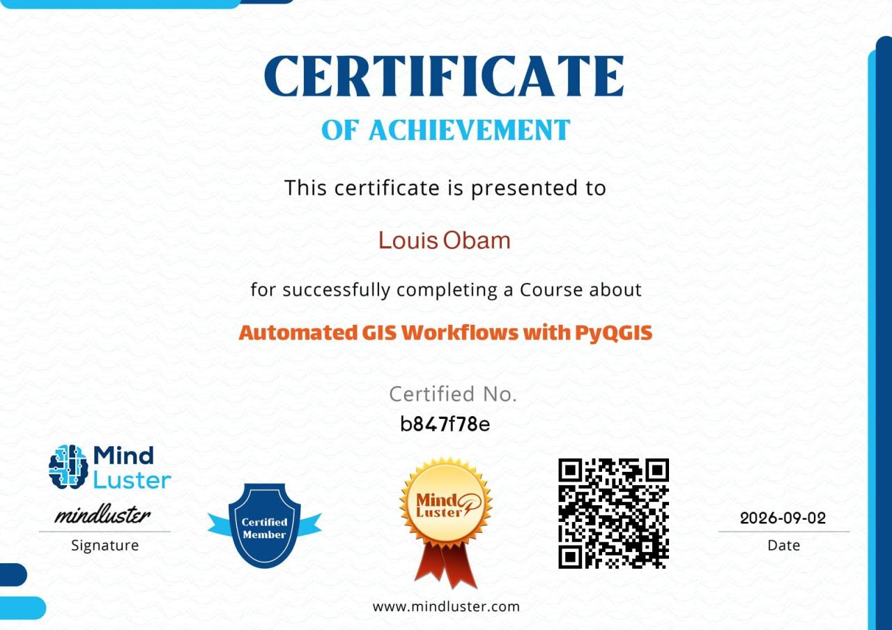
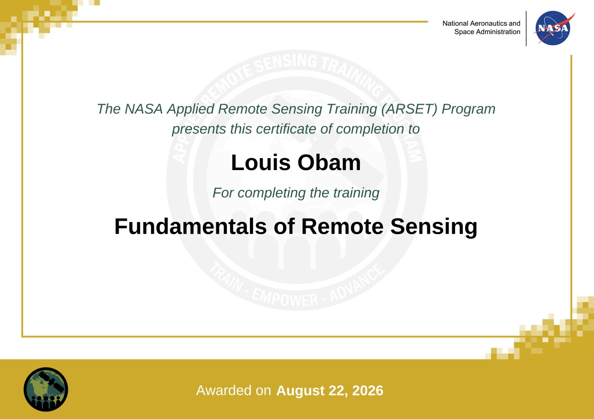
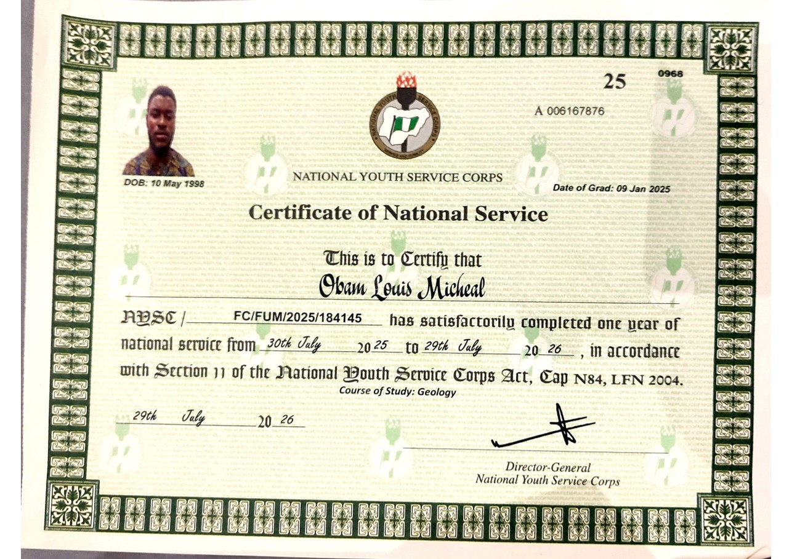
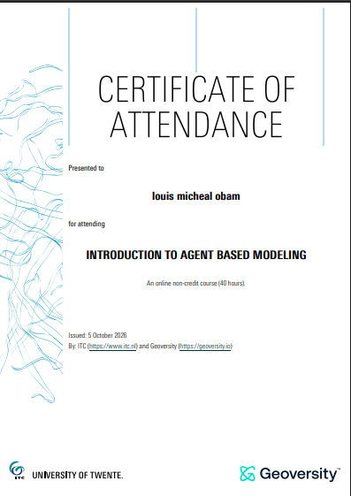
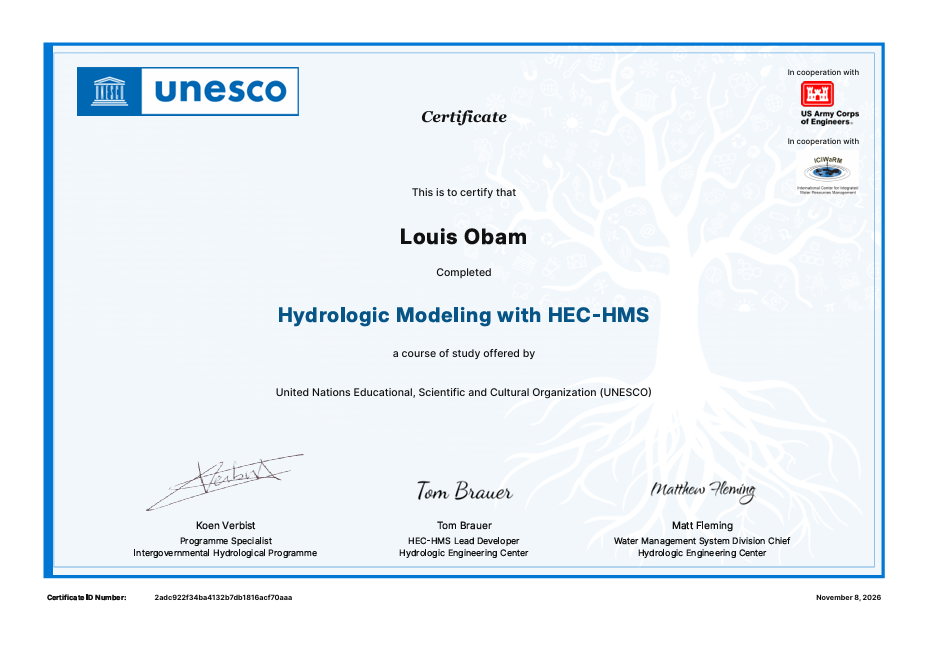
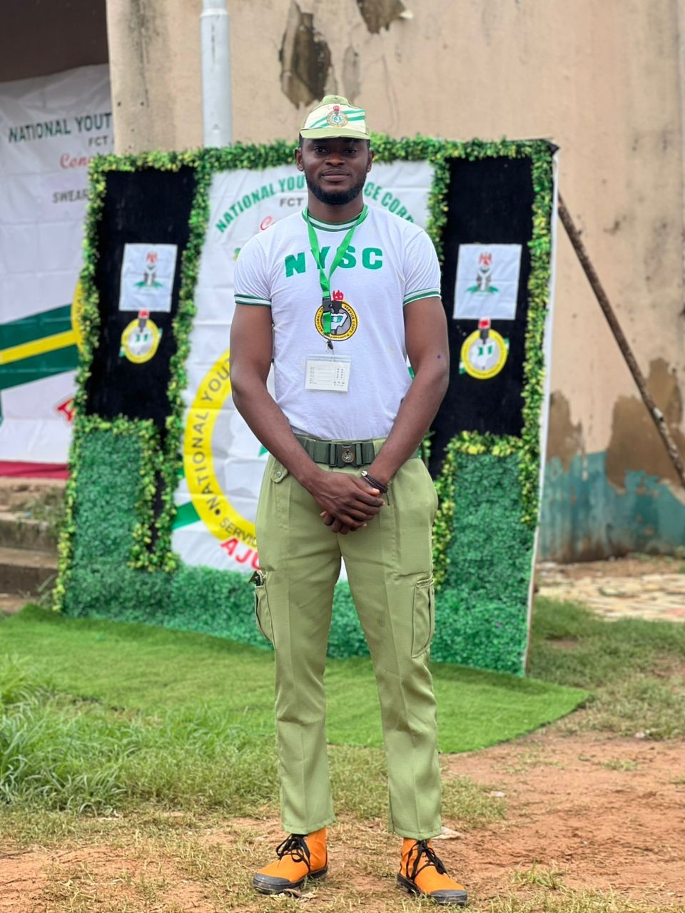

Obam Louis
Micheal
Groundwater Exploration Geologist,
Researcher, GIS & Remote Sensing Specialist.
Researcher, GIS & Remote Sensing Specialist.

↘ Enjoy your view
Hi, I'm Obam Louis Micheal! I'm a graduate Geologist from the Federal University of Technology, Minna, with hands-on experience in groundwater exploration and management. I am passionate about using modern geophysics, GIS, and remote sensing technologies to deliver reliable drinking-water solutions for underserved communities. Currently, as a Groundwater Exploration Geologist at AquaMark Integrated Services in Abuja, I conduct geophysical surveys using modern PQWT-TC 150 equipment and supervise borehole drilling projects that are bringing clean water to communities across Nigeria.
My undergraduate research — "Geophysical Investigation of Groundwater Potential in Part of Maitumbi, Minna" — combined field surveys across five traverses with ArcGIS mapping to produce a hydrogeological map identifying groundwater accumulation zones with approximately 95% accuracy. During my internship at the Nigeria Geological Survey Agency, I supported the Map and Cartography Unit and participated in borehole water-quality assessments, strengthening the technical foundation I continue to build through field practice.
Beyond fieldwork, I am developing my professional skills through certifications in GIS automation (PyQGIS), coordinate reference systems, remote sensing (NASA ARSET), machine learning, and environmental management (ISO 14001). I also completed my National Youth Service Corps, serving as President of the Logistics Committee. I aspire to leverage the France Excellence Eiffel Scholarship through the Master's Double Degree Programme in Continental Water Sustainability (CWS), jointly offered by the University of Strasbourg and Karlsruhe Institute of Technology (KIT), to develop advanced scientific and technical skills that will enable me to contribute to innovative, reliable, and sustainable water-resource management solutions, particularly in underserved communities in Nigeria and beyond.


Graduation Day — Federal University of Technology, Minna, 2024

Certificate of Recognition — "Academic Star", FUT Minna Geology Department

Geophysical survey with the PQWT-TC 150 resistivity instrument — AquaMark Integrated Services
Borehole drilling and geophysical exploration across communities — Abuja & beyond















Volunteer — 07/2023 | Minna–Bosso area, Nigeria · Role: Groundwater Exploration & Borehole Development Support


Role: President, Logistics Committee · 2025 – 2026 | F.C.T. Chapter



Nigerian Mining and Geosciences Society (NMGS)